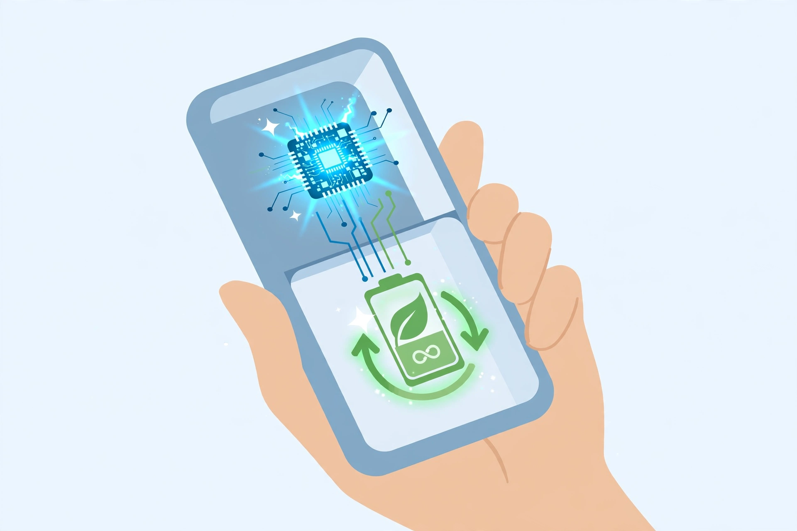

2026년 10월 30일

스마트폰 안에서 AI를 돌리는 일이 훨씬 가벼워졌습니다. LG유플러스는 10월 29일, 스마트폰 소형언어모델을 효율적으로 실행하고 학습하는 토큰 최적화 기술 관련 논문 2편이 세계 3대 AI 학회 중 하나인 뉴립스(NeurIPS) 2026의 온디바이스 인텔리전스 워크숍에 채택됐다고 밝혔습니다.
핵심은 이렇습니다. 스마트폰은 메모리와 전력이 넉넉하지 않으니까, AI가 처리하는 단위인 토큰을 잘 다듬어 계산량을 줄이는 겁니다. 회사 설명에 따르면 통화 서비스용 소형언어모델에 경량화와 추론 가속 기술을 적용한 실험에서, 기존 방식보다 처리 속도가 약 4.5배 빨라지고 배터리 소모는 약 77% 줄었습니다. AI 성능은 최신 클라우드 AI와 비슷한 수준을 유지했다고 합니다.
개인 데이터를 밖으로 보내지 않고 기기 안에서 학습한다는 점이 특히 눈에 띕니다. 전화나 메시지 같은 민감한 정보가 서버로 나가지 않아도 AI가 똑똑해질 수 있다면, 빠르고 배터리도 오래 가는 건 덤이겠죠. 아직은 연구 단계에 가까운 소식이지만, 앞으로 스마트폰 AI가 클라우드에 기대지 않고도 훨씬 가벼워질 수 있다는 방향을 보여줍니다.